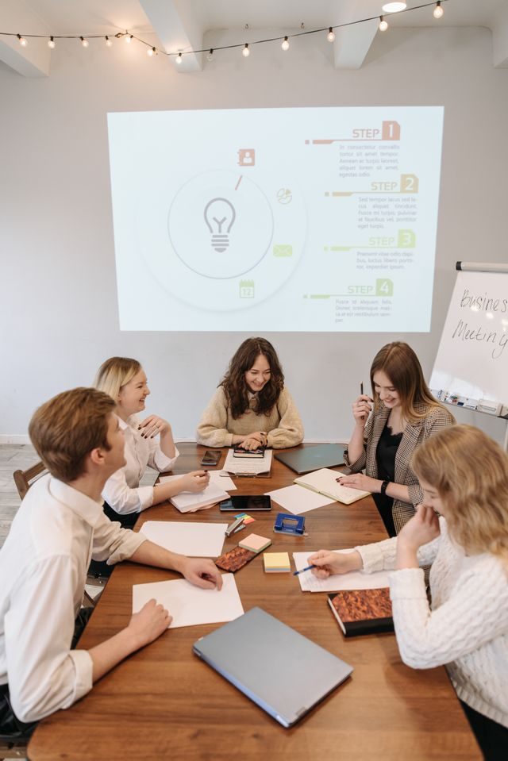

這些年，我在不同國家、不同文化與不同專業領域之間工作，看過太多人因為看錯人、信錯人、判斷錯誤，而付出極大的代價。輕則浪費時間、消耗感情；重則可能賠上一段關係、一個事業，甚至多年累積的心血。
你是不是也曾經在這些時刻，懷疑過自己的眼光？
「人性」
一直都在。
只是你看不看得懂。
加入官方 LINE，了解課程資訊與最新消息。
LINE加入 LINE・免費領取 7 個行為觀察線索 →擁有 20 年以上美國行為研究與實務經驗，曾參與美國執法相關之行為分析培訓，並具備好萊塢影視投資製作經驗。
多年在不同國家、文化與專業領域之間工作，將實務經驗重新整理成「社會大學｜人生必修課 101」系列課程，帶你建立一套可以帶回工作、商業、人際與關係裡持續使用的觀察方法。
「老師，你到底什麼時候要再開實體課？」
從指定公開貼文的學員留言中，挑選與課程體驗最相關的 10 則重點整理。
教學深入淺出、案例幽默，重點不在貼標籤，而是把善傳遞下去；是非常充實的一天。
曹○銘公開留言重點整理收穫遠超預期。不只學看人的技巧，也更誠實地看見自己，能帶回人際互動與決策中持續練習。
W○○○e H○○○o公開留言重點整理第二次上課依然滿滿乾貨，從生活軌跡透露的訊息中，得到不同的觀察視角與更有意義的理解。
B○○ Y○ C○○○g公開留言重點整理從筆跡到肢體語言，許多細節原來都有脈絡可循；內容精彩到怕漏聽，只想專心看又不停做筆記。
K○ C○○n公開留言重點整理除了筆跡與肢體辨識，更被老師面對問題的態度、正向思考，以及看見與支持他人的品質打動。
Y○○○n N○○n公開留言重點整理筆跡幫助重新認識自己，肢體語言則練習識人與讀懂情境；是一門實用、有溫度，也引人反思的課。
凰○公開留言重點整理從書寫理解性格，也學會在溝通中掌握進退、建立邊界與保護自己；整堂課生動有趣、一下就過了。
黃○慈公開留言重點整理老師把複雜概念說得清楚、有邏輯，再用案例帶著練習；一整天扎實、安心，而且很值得推薦。
徐○婷公開留言重點整理得到的不只是知識，更是一場觀念與視角的洗禮；學會調整溝通方式，以理解取代批判。
C○○○n C○○n公開留言重點整理一整天精彩到捨不得分心。開始讀懂筆跡、表情與肢體語言背後的意義，也期待繼續上進階課程。
T○○y L○e公開留言重點整理以上為學員的公開留言，完整原文請見原貼文。
從觀察到判斷，建立屬於你的識人能力。
從字跡、簽名的書寫習慣中，看見一個人可能透露的特質與值得注意的線索，現場拆解實例。

透過實際案例與可直接操作的觀察方法，練習辨識動作、姿態與下意識反應裡的不一致。
有些東西可以在線上教；觀察力，必須在現場練。
無論你的職業是什麼，
總一定需要好好看人、好好交流。
常需要判斷合作、用人、談判或人際關係的人。
從生活情境與案例演練開始，不需要心理學背景。
帶回面試、合作、溝通與日常互動，先交叉驗證再做決策。
可以。課程從生活情境與案例演練開始，不需要任何心理學背景。
面試、合作、談判、溝通與日常人際互動。學會先觀察、交叉驗證，再做決策。
台北市。正式地址與報到資訊，會在確認報名後另行通知。
這堂課不談玄學，也不教讀心。我們練習的是觀察言行是否一致、辨識值得注意的訊號，並避免因為自己的期待與直覺太快下結論。
【請填入退費規定】
【請填入，例如：筆記用具、自己的簽名樣本等】
有。確認報名後，隨課附贈「識人教戰應用手冊」，包含重點整理、觀察檢核與延伸練習。